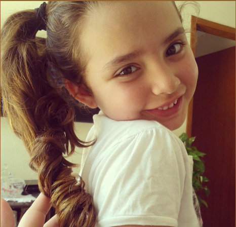
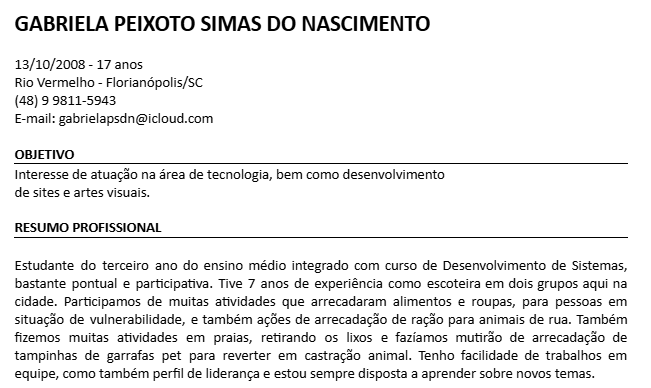
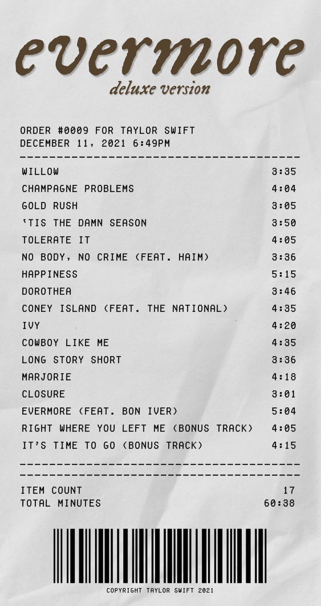
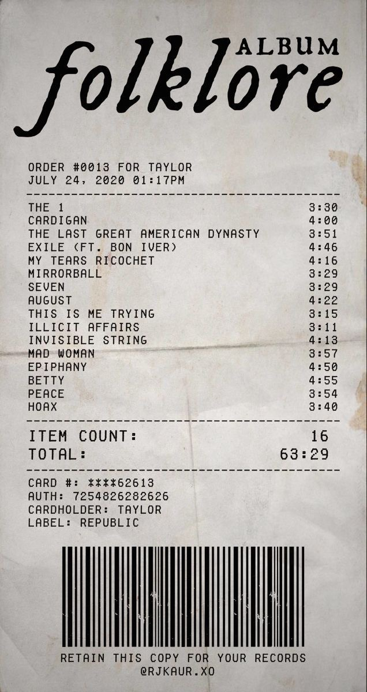
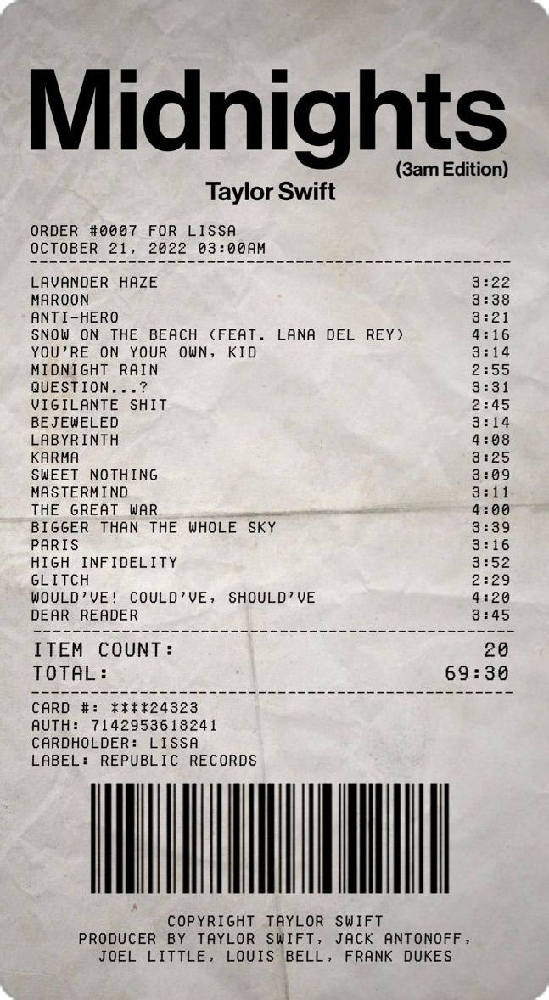
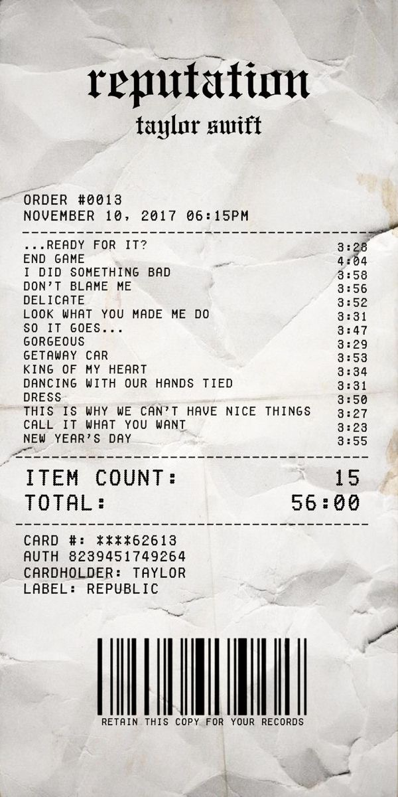
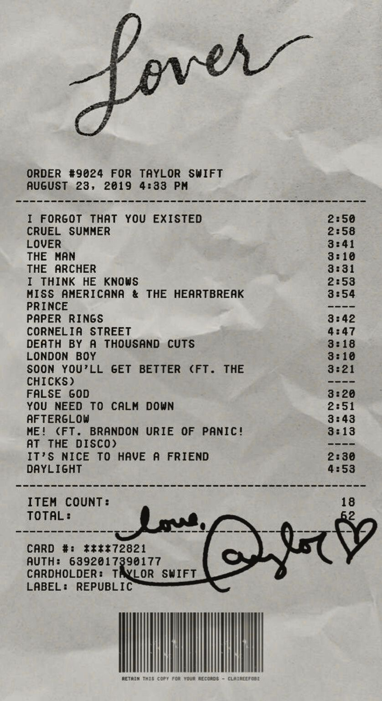

Gabriela do Nascimento
3B

Sou Gabriela do Nascimento, natural de Florianópolis (2008). Atualmente, curso o Ensino Médio no Sesi, conciliando com o técnico em Desenvolvimento de Sistemas. Minha paixão reside nas Ciências Humanas e nas artes — da literatura à música. Sou fã de leitura (especialmente Os Sete Maridos de Evelyn Hugo) e de pop/folk, tenho muitas cantoras e cantores como meus favoritos. Encaro o futuro com tranquilidade, sabendo que minha escolha de carreira será guiada pelo que me faz feliz.
Currículo Profissional
Baixe meu currículo completo ou visualize abaixo:

Atividades por Área

Linguagens

Matemática

Natureza

Humanas

Téc. Dev. Sistemas